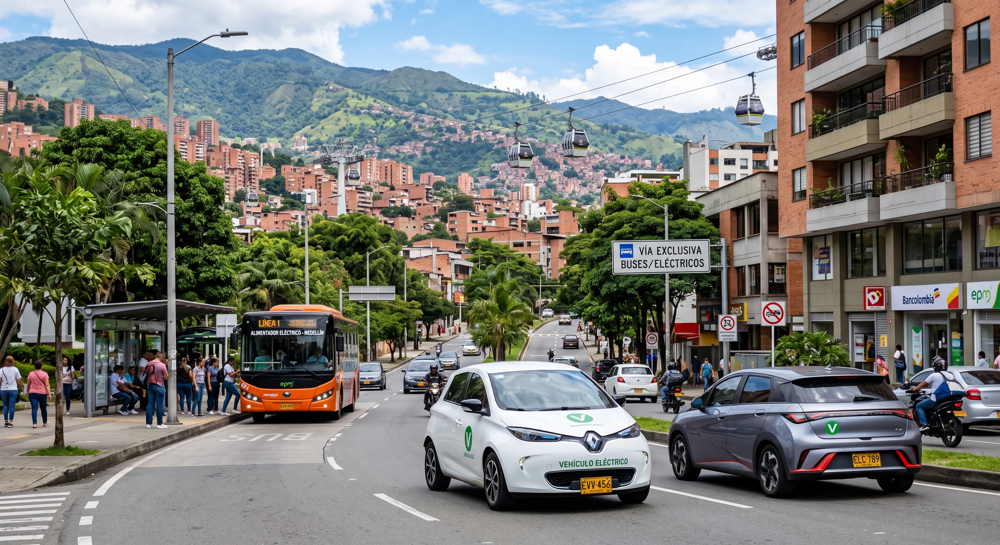
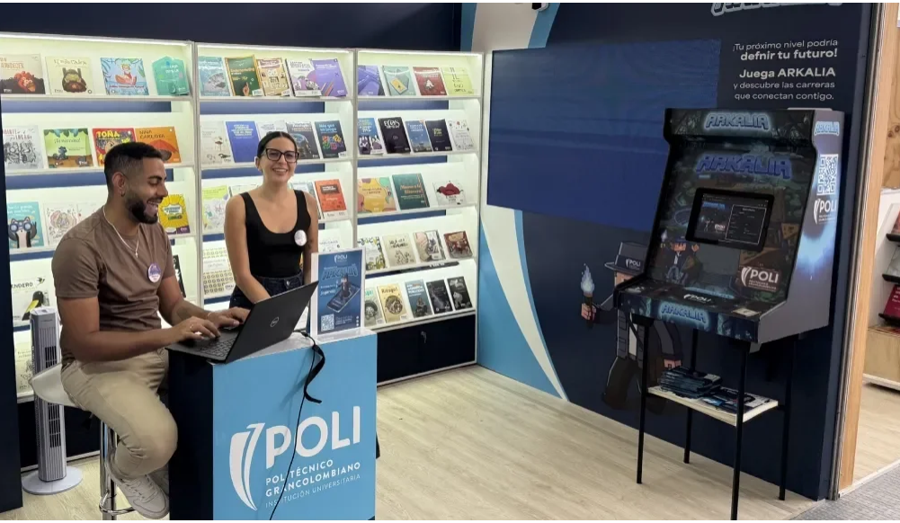

Noticias del dia
cripto estafas
“La estimación de esta cifra tomó como punto de partida los USD 44.200 millones en cripto activos que recibió el país entre julio de 2024 y junio de 2025, según Chainalysis. A partir de ese volumen, el gremio contrastó la incidencia global de las estafas cripto reportada por TRM Labs y aplicó la proporción de fraudes vinculados con herramientas de inteligencia artificial. El resultado pone el fenómeno en una dimensión mucho más preocupante”, explica Asoblockchain.
 as">
as">
¡Alivio para embalses y trancones en las vías!
“Fuertes lluvias en Medellín y el Valle de Aburrá aliviaron la sequía de los embalses, pero provocaron caos en la movilidad por caídas de árboles y accidentes viales. El Siata advirtió que los aguaceros coexistirán con el fenómeno de El Niño en la región.
Si bien esta agua era necesaria para sopesar la baja de niveles de los embalses como consecuencia del fenómeno de El Niño, las autoridades y ciudadanos reportan algunos accidentes viales y caos en la movilidad

as">¿Uno de cada dos carros nuevos ya es eléctrico o híbrido: Tesla y BYD concentran más del 60% en 2026
Tesla se quedó con 41,6% del mercado colombiano de vehículos eléctricos entre enero y agosto, mientras BYD alcanzó 21,6%. El avance de estas marcas ocurre en un mercado en el que las tecnologías electrificadas representaron en agosto el 50,6 % de las matrículas de carros nuevos.
El carro eléctrico dejó de ser una rareza en las calles colombianas y comenzó a disputarles espacio a los motores de combustión. En agosto, por primera vez, los vehículos híbridos y eléctricos representaron 50,6% de todos los vehículos nuevos matriculados en Colombia. Es decir, uno de cada dos carros que llegaron al registro en el mes utilizaba alguna de estas tecnologías.

as">Así se vivió la participación del Poli en la Fiesta del Libro y la Cultura de Medellín
Del 11 al 20 de septiembre, el Poli hizo parte de la Fiesta del Libro y la Cultura de Medellín, un encuentro que reunió a la ciudadanía alrededor de la literatura, el conocimiento, el arte y la cultura, y que permitió compartir diferentes iniciativas desarrolladas desde la Institución junto a aliados del territorio.
Durante esta edición, el Poli contó con un espacio en el que los visitantes pudieron conocer su catálogo editorial, la oferta académica y diferentes proyectos que conectaron la educación con la cultura, la creación y las historias de las comunidades.
Uno de los momentos destacados fue la presentación de “De grande quiero ser bombero”, una publicación infantil desarrollada junto al Cuerpo de Bomberos Voluntarios de Envigado. El libro, creado por Graduadas Poli con el acompañamiento docente y la asesoría técnica del organismo de socorro, acercó a niñas y niños a la labor bomberil mediante ilustraciones, actividades, retos y contenidos interactivos. La propuesta permitió conocer el trabajo, la preparación y el compromiso de quienes atienden emergencias y trabajan por la protección de las comunidades.